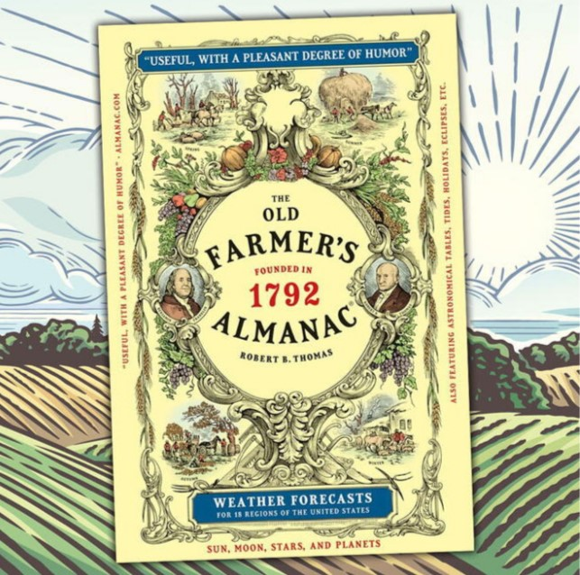
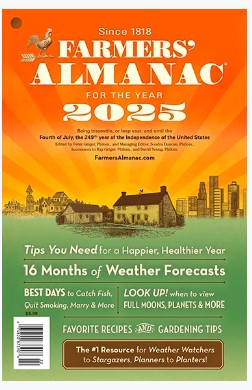
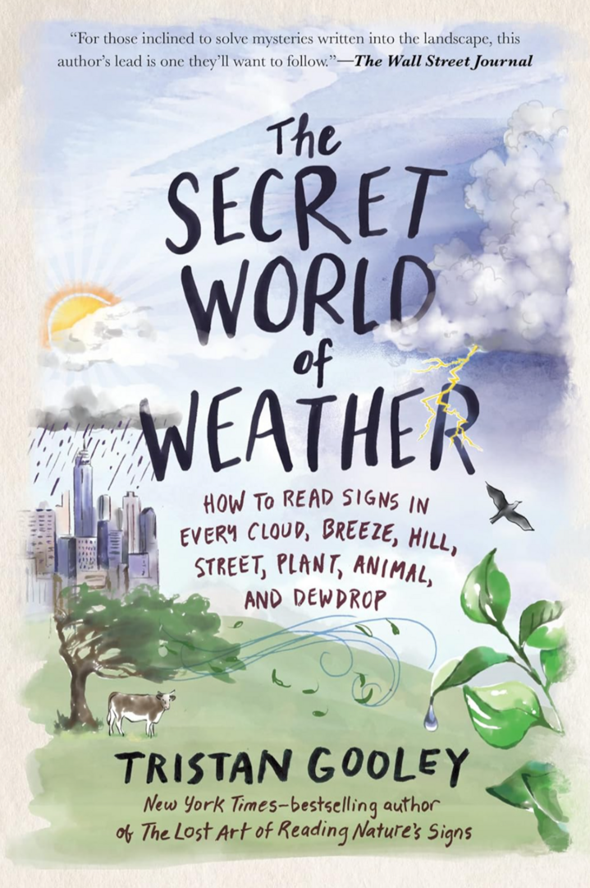
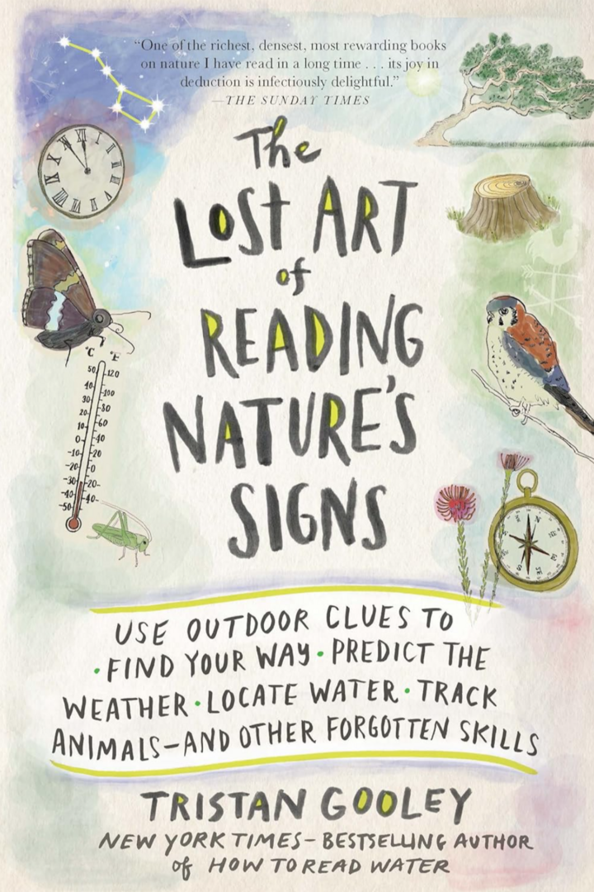
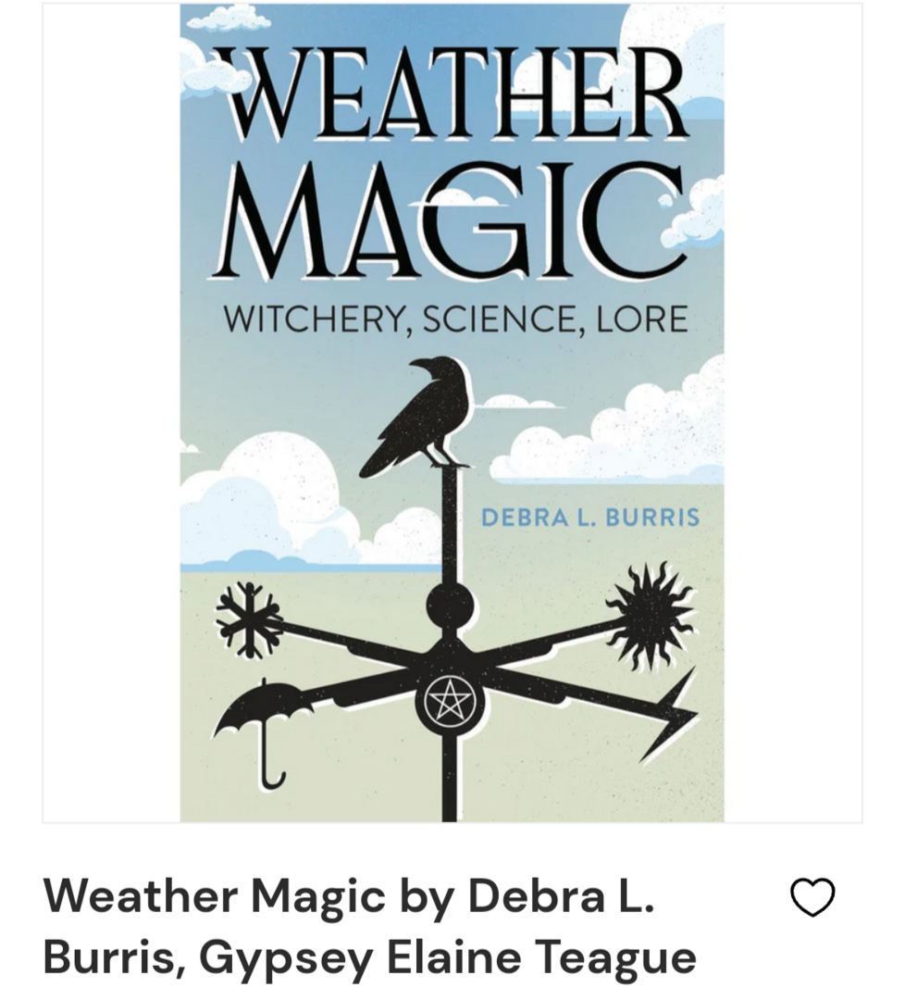
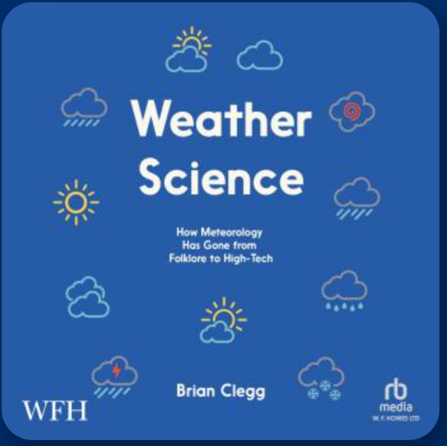
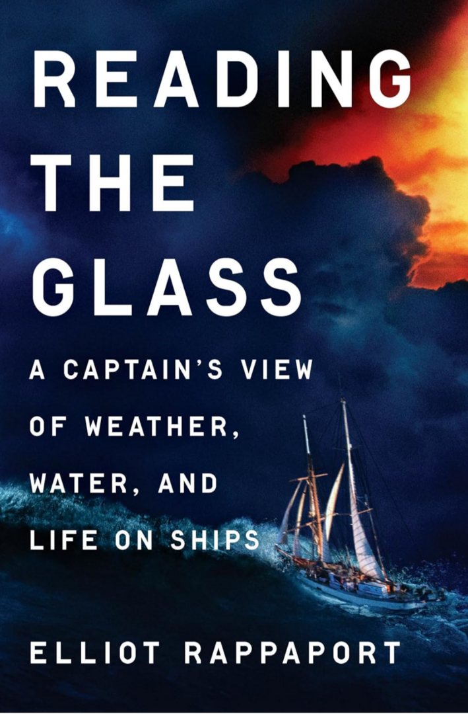
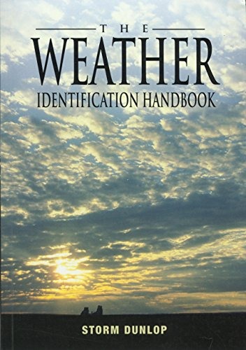
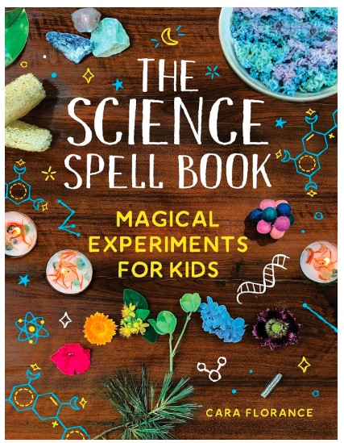

I am a huge fan of libraries; I suggest you check yours out and see what they have to offer. Not just in the context of books; some also offer discounted memberships for educational resources. For example, I get unlimited free classes from Universal Class through my library (which does indeed offer a meteorology course). No time to read? Most have audiobooks too. See if your library is linked with apps like Libby and Hoopla, so you can check out books to download to your Kindle or other readers.
-

THIS. This is the OG, end-all, be-all. It's a practical guide for all things farming/gardening/weather/etc. -

Not to be confused with the Old Farmers Almanac above (although very similar)--sadly, this one is on its way out. HAPPY UPDATE: The Farmer's Almanac has been bought and will continue!! It's a fun-filled and charming blend of "the old ways" and folklore, mixed with science-based information. Even if you choose not to purchase the physical book, the web site is an awesome way to spend an afternoon learning. -

I have this book; I haven't finished it yet, but it's an interesting read. -

I have this book too; it's more about nature in general, but it does have a chapter specifically about weather. -

Dr. Buriss is an astrophysicist AND a witch, so she brings a unique and balanced perspective. I have this book in my to-read pile. -

Note: this is an audio book. -

Recommended by my dear friend and colleague Barbara--certainly sounds interesting! -

-

A little bonus: a book for children that makes science feel like magic (because it is). This book is obviously neither about weather nor witchcraft, but it underscores the science behind what seems magical. I have this book and have already done several experiments with my young grandchildren; it's a big hit, satisfying both their eagerness for knowledge and their love of all things enchanted.